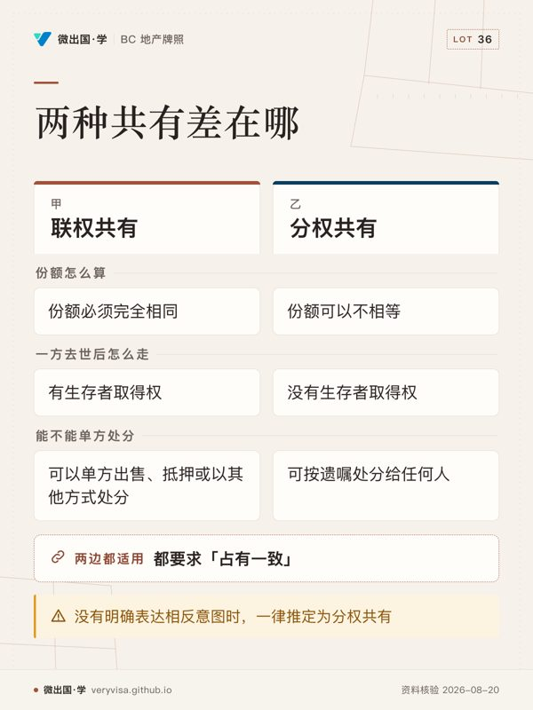

🃏 Flashcards · 3 闪卡 · 3 张 🖼 Slides · 2 幻灯 · 2 页 ✍️ Questions · 10 刷题 · 10 道
法律基础与产权 law-foundation P2 稳住 P2 Hold steady
ZH EN ZH + EN
先看这一章怎么考 First, how this chapter is tested
概念辨析与归类题：给出一段权利安排（如终身居住、按他人寿命计时、四类损耗、地役权与许可、收益权），要求识别准确的法律术语及权利义务归属（谁付地税和按揭利息、谁付按揭本金和保险）。 Concept distinction and classification questions: Given a specific legal arrangement (such as a life estate, estate pur autre vie, four categories of waste, easements versus licences, or profits a prendre), candidates must identify the precise legal terms and allocate rights and duties (who pays property taxes and mortgage interest versus who pays mortgage principal and insurance). 要件判断与随地转移题：设定买卖过户场景，测试地役权三要件、法定路权例外、限制性契约五要件（尤其是消极性质）、建筑方案或未登记三年内短租约是否对新买家有约束力（runs with the land）。 Essential elements and running with the land: Setting a purchase and sale scenario to test the three requirements for an easement, the statutory right of way exception, the five requirements for a restrictive covenant (especially its negative nature), building schemes, and whether an unregistered lease of three years or less binds a new purchaser. 附着物与动产两步测试题：给出交易中引发争议的物品（仅凭自身重量放置、轻微固定为了欣赏物品本身或稳定设备、或为了改良土地），考核推定起点与固定意图（更佳用途测试）的判断。 Two-step test for fixtures and chattels: Presenting disputed items in a transaction (resting solely by own weight, slightly affixed to enjoy the article itself or steady equipment, or affixed to improve the land), testing the initial presumption and the objective intention of affixation (the better use test). 最常丢分的陷阱（看到题干信号就警觉） Traps that cost the most marks (watch for the signal in the stem)
混淆按揭本息与运营费分担 Confusing mortgage principal and interest with operating expense allocations 题干出现 life tenant（终身权人）与 remainderman/reversioner（剩余权人/归复权人）争议谁付地税、按揭利息、按揭本金或保险费。 The question stem features a dispute between a life tenant and a remainderman or reversioner over who pays property taxes, mortgage interest, mortgage principal, or insurance premiums. 误把积极义务当成随地转移的限制性契约 Mistaking a positive obligation for a restrictive covenant that runs with the land 题干出现契约要求业主必须出钱维修、必须建造或必须完成某项积极行为（positive covenant），并问新买家是否受约束。 The question stem mentions a covenant requiring an owner to expend money on maintenance, construct something, or perform an affirmative act (positive covenant), asking if a subsequent purchaser is bound. 以为没有受益地就绝无地役权，或有便利就算地役权 Assuming an easement can never exist without a dominant tenement, or treating personal convenience as an easement 题干出现市政府、王室或公用事业铺设管线（无受益地），或者出现口头允许邻居借用土地、仅方便个人而非改良受益地本身。 The question stem involves a municipality, the Crown, or a utility laying pipes or lines with no dominant tenement, or an oral permission allowing a neighbour to use land that accommodates only the person rather than benefiting the land itself. 本章考点页：导图、要点表、7 道带逐项解析的练习 →
本章地位 ：这是整门课里最"原理"的一章——讲的是普通法财产制度的骨架，多数内容长青，
不像监管机构名或税率那样年年会变。但骨架不等于一成不变：2025 年一宗判决第一次正面
动摇了"fee simple 就是最大、最稳的产权"这个前提。核实日期：2026-09-05 ，出处见文末源表。
BC 每一次交易，持牌人交给买方的从来不是"一块地"，而是一份法律上定义好的权利包 。
这一章要回答的问题是：这个权利包到底装了什么、装多久、能不能被别人分走一部分、
以及——考试口径没告诉你的——这个权利包在什么情况下可能被法院整个撤销 。
一、地权的底层逻辑：你买到的从来不是"地"本身 本节回答 This section answers 解释为什么土地绝嗣会归复王室、政府为何能依法征收私人土地 Explains why intestate land without heirs escheats to the Crown and why the government holds statutory authority to expropriate private land.
制度设计 ：BC 的不动产法承袭英国普通法，核心是"地产权原则"（doctrine of estates）。
王室（Crown，即联邦与省级政府）才是土地的终极所有者；私人所谓"拥有"一块地，
法律上说的其实是拥有其中一种estate ——一段可以占有、使用、支配土地的时间。
这不是文字游戏：它解释了为什么政府能够征收（expropriation）私人土地
（哪怕极少行使），也解释了"归复"（escheat）制度——一个 fee simple 业主
死亡且没有遗嘱、也没有法定继承人时，土地会回归王室 ，而不是变成无主地。
底层逻辑 ：为什么要设计成"从王室那里领一段权利"而不是"绝对私有"？
这套框架来自封建土地保有制（tenure）的历史遗留——保有制本身早已废除，
但"estate 是一段被王室认可的存续期间"这个概念留了下来，并带来一个至今仍在起作用的
实际后果：私人产权始终是相对 于王室的，不是绝对的。
ℹ️
"outright ownership" 不是法律术语
日常说"我拥有这套房子"，法律上准确的说法是"我持有这块地的 fee simple 地产权"。
差别不是抠字眼——它决定了政府征收、无遗嘱归复、后文的原住民地权冲突这几件事
为什么在逻辑上是自洽的：因为你手里的从来就是一份"权利包"，不是绝对所有权本身。
节末检索小测 · 先别往回翻，凭记忆作答 Quick recall check: answer from memory before scrolling back
An elderly fee simple homeowner in British Columbia passes away without leaving a will and has no surviving legal heirs. Under the common law doctrine of estates, what happens to the ownership of the property?
不列颠哥伦比亚省一位持有完全保有产权（fee simple）的年长业主去世，没有留下遗嘱，也没有在世的法定继承人。根据普通法的地产权原则，该物业的归属会如何处理？
a The property becomes ownerless land and may be claimed by the first occupant who registers a notice. ✗ 错误。普通法下王室是土地的终极所有者，不存在谁先占用就能登记据为己有的“无主地”规则，这是把不动产当成无主野生动产的常见误区。 Incorrect. Under the common law, the Crown is the ultimate owner of all land; there is no rule allowing the first occupant to register notice and claim unowned land, which confuses real property with unowned wild chattels.
b The property reverts to the Crown through the operation of the doctrine of escheat. ✓ 正确。在地产权原则（doctrine of estates）下，王室（Crown）是土地的终极所有者；当完全保有产权（fee simple）业主死亡且无遗嘱、无法定继承人时，土地依归复制度（escheat）回归王室。 Correct. Under the doctrine of estates, the Crown is the ultimate owner of all land; when a fee simple owner dies intestate leaving no legal heirs, the property reverts to the Crown through the doctrine of escheat.
c The property is automatically transferred to the local municipality through statutory expropriation. ✗ 错误。征收（expropriation）是政府在特定公共需要下强制取得私人土地的权力，而非业主绝嗣无继承人时的自动归属机制。 Incorrect. Expropriation is the statutory power of government to take private land for public purposes, not an automatic mechanism triggered by the death of an intestate owner without heirs.
d The fee simple estate is extinguished and converts into a leasehold estate held by the neighbours. ✗ 错误。业主绝嗣不会使产权自动转变为邻地的租赁产权（leasehold estate），土地会直接归复王室。 Incorrect. The death of an owner without heirs does not convert the property into a leasehold estate held by neighbours; the land escheats directly to the Crown.
看答案与每个选项的解析 Show the answer and why each option is right or wrong 答案 Answer ：b
二、三种地产权（estates）：期限不同，权利包同样丰厚 本节回答 This section answers 区分三种地产权、终身权人与归复/剩余权人的费用分担及四类损耗 Distinguishes the three estates in land, expense allocations between a life tenant and a reversioner or remainderman, and the four categories of waste. 本章考题 1 Question 1
BC 法律承认的地产权分三大类，区别只在于能持有多久 ，而不在于权利包本身的丰厚程度。
图：三种地产权——区别只在于能持有多久
Fee Simple：最大的一档，但不是"永久且无条件"
Fee Simple（可译"完全保有产权"）是持牌人日常打交道的绝大多数交易类型，
是普通法承认的最大一档 estate：可以自由使用、出租、抵押、设立地役权，
死后可依遗嘱处分，无遗嘱时按法定继承顺序转移给继承人。
历史变革 ："fee" 原意是"可继承"，"simple" 原意是"继承人范围不受限制"——
早期普通法一度限制谁有资格继承、甚至限制业主能不能在世时自由转让。
"自由让与"（freedom of alienability）这条原则在英国法演化了几个世纪才确立，
才有了今天"fee simple 可以自由买卖、抵押、遗赠"的现代面貌。
Life Estate 与 Estate Pur Autre Vie：按一条人命计时的产权
Life Estate（终身地产权）持续到"终身权人"（life tenant）去世为止，
是一种自由保有产权（freehold），但存续期不确定——按一个人的寿命计时。
终身权人享有占有、使用、收取全部收益的权利，但这份权利登记在
fee simple 业权的名下作为一项负担（charge） 。
终身产权到期后，产权回到谁手里有两种情形：设立终身产权的原业主为自己保留了这份将来的权益，
他称为"reversioner"（归复权人）；指定由第三人取得的，那个第三人称为"remainderman"（剩余权人）。核心分工：
Waste（损耗）的四种类型 ——这是终身权人义务的核心，考试口径原有分类仍然长青：
如果终身权人把自己这份权利转让给他人（比如再婚后把老房子的终身权让给另一人），
受让人拿到的是 estate pur autre vie ——按"另一个人的寿命"计时的产权：
终身权人本人还活着，但转让出去的这份权利已经易主，一旦那位终身权人身故，
受让人的权利也随之终止。
✕
终身产权卡在交易链条中间怎么办
归复权人无法交出"干净"的 fee simple——除非终身权人同意放弃权利（通常需要
财务补偿）。上市前必须先解决 ：终身权人与归复权人都要作为委托人签署委托协议，
否则挂牌本身就有瑕疵。贷款机构对以终身产权作抵押也普遍谨慎，因为终身权人一旦
身故，抵押品对贷款人来说就"消失"了。
Leasehold Estate：租约也是一种 estate，但级别更低
租期（terms of years）历史上不算不动产权，只是当事人之间的合同关系；
后来逐渐演变成对继受人也有约束力的"租赁产权"（leasehold estate），
但地位仍低于自由保有产权。租赁的具体规则在住宅与商业租赁那一章展开 ，
这里只提示一个和"地产权与权益"直接相关的现行条文：
ℹ️
未登记的短租约，买方一样要认
Land Title Act s.23(2)(d)（现行，核实日 2026-09-05）规定：产权证的"无可争辩"效力
并不排除期限 3 年以内、且承租人已实际占用的未登记租约 。也就是说，卖方把物业
租给别人两年，即使这份租约没有登记在产权证上，买方接手时依然要受这份租约约束。
尽调时问一句"有没有租客"，不能只查产权证。
节末检索小测 · 先别往回翻，凭记忆作答 Quick recall check: answer from memory before scrolling back
A life tenant who is angry at the remainderman intentionally sets fire to the residential building on the property, even though the instrument creating the life estate expressly states that the life tenant is unimpeachable for waste. Under which category of waste is the life tenant still held liable?
一名终身权人对剩余权人心怀不满，故意放火烧毁物业上的住宅建筑，尽管设立该终身产权的文件明确写明“不追究终身权人的损耗责任”。该终身权人仍须对哪一类损耗承担法律责任？
a Permissive waste, because the building was allowed to deteriorate beyond normal wear and tear. ✗ 错误。放任损耗（permissive waste）是指消极不作为、任由房屋自然损坏（如不修漏水屋顶），且一般无须赔偿，而纵火属于恶意主动毁损。 Incorrect. Permissive waste refers to passive neglect in allowing premises to deteriorate naturally (such as failing to fix a leaking roof), which generally carries no liability; arson is an intentional, malicious act of destruction.
b Ameliorating waste, because the removal of the old structure alters the character of the land. ✗ 错误。改良性损耗（ameliorating waste）是指虽然改变了物业原貌但实际提升了物业价值的行为（如加建露台），烧毁房屋显然不是改良。 Incorrect. Ameliorating waste refers to alterations that change the appearance of the property but actually enhance its value (such as adding a deck); burning down a house is clearly not an improvement.
c Equitable waste, because flagrant and malicious destruction cannot be excused even by an exemption clause. ✓ 正确。衡平法损耗（equitable waste）指明知故犯、恶意毁损物业的行为（如故意烧毁房屋），即使设立文件写明“不追究损耗责任”，终身权人也不能免责。 Correct. Equitable waste refers to flagrant and malicious acts of destruction (such as intentionally burning down a house); even if the instrument creating the life estate expressly states that the life tenant is unimpeachable for waste, the life tenant cannot be excused from liability for equitable waste.
d Routine operational waste, which is offset against the principal payments made by the remainderman. ✗ 错误。普通法四类损耗（waste）中并无所谓“日常运营损耗抵扣本金”的概念，属捏造术语的干扰项。 Incorrect. There is no concept of routine operational waste offsetting principal payments in the common law doctrine of waste; this is a fabricated distractor.
看答案与每个选项的解析 Show the answer and why each option is right or wrong 答案 Answer ：c
三、比"地产权"小一级的权益：能不能"跟着地走"是分界线 本节回答 This section answers 判断地役权、法定路权、限制性契约、收益权与许可的效力 Evaluates the legal enforceability of easements, statutory rights of way, restrictive covenants, profits a prendre, and licences. 本章考题 2 Question 2
不是所有对土地的权利都构成 estate。制度设计 上，普通法还承认一类"比 estate 小"
的权益——它们不给你占有权，只给你对别人的地做某件特定事情的权利。这类权益能不能
约束后来的买家，取决于它是否登记在 Land Title Act 下：登记了，就"随地转移"
（runs with the land）；没登记，通常只是当事人之间的合同关系。
地役权 Easement：三个条件缺一不可
地役权是一方（受益地 dominant tenement 的业主）在另一方土地（负担地 servient
tenement）上行使特定用途的权利，但不占有那块地。构成有效地役权需要同时满足：
必须有受益地和负担地两块地 ——只有负担地、没有受益地的安排（"easement in gross"）
不是有效地役权，只能算一份合同性质的许可（licence）；必须真正让受益地本身受益 ，而不是只方便了业主个人——否则只是合同许可；权利范围必须能被清楚界定 ，且授予人与受益人都要有相应的处分能力
（例如租客不能设立超出租期约束力的地役权）。
法定路权（statutory right of way）是一个重要例外 ：Land Title Act s.218
（现行，核实日 2026-09-05）允许王室、市政府或经指定的其他人，
在没有受益地的情况下 设立地役权——这条正是 BC Hydro 架设输电线路、
市政铺设管线时使用的法律依据，不受普通法"必须有受益地"这条要求约束。
地役权解除有两条路：当事人协议解除，或依 Property Law Act s.35
（现行，核实日 2026-09-05）向 BC 最高法院申请撤销或修改，理由包括：
因周边环境或土地性质变化，该权益已经过时 ；
继续保留会妨碍土地的合理使用，而对他人没有实际好处；
受益方已明示或默示同意修改或解除；
修改或解除不会损害受益方；
登记的文书本身无效、不可执行或已经到期。
限制性契约 Restrictive Covenant：五个要件，第一条最容易考
限制性契约限制一方（covenantor，受限地业主）对土地的使用，以造福另一方
（covenantee）的土地。要"随地转移"、约束后来的买家，必须同时满足五个要件：
内容必须是消极性质 ——业主要能"不做某事"就算遵守；要求"必须做某事"的
是"积极契约"（positive covenant），即使双方之间有约束力，也不随地转移；必须真正让受益地增值或获益 ；受益地与受限地都必须在文件中精确界定 ；
文件必须明确表明意图约束后续继承人与受让人 ，不能只是私人承诺；
若受限地已转手，新业主在取得土地前必须已经知悉 该契约——在 BC 的
Torrens 登记制度下，已登记的契约本身就构成知悉 。
建筑方案 Building Scheme：一次性给多块地上同一套规矩
建筑方案是开发商在同一个细分地块内，对两块以上土地统一施加的一组限制性契约。
Land Title Act s.1 把它定义为：多块地分别卖给不同买家、但每位买家都与同一个
出让方签订了"自己这块地要遵守某些使用限制"的契约，且这些限制构成一套对该片
土地统一适用的"特别地方规则"。落地机制是 Land Title Act s.220（现行，核实日
2026-09-05）：登记在案的所有者可以登记一份"建筑方案设立声明"，
作为对该片土地的一项负担；一旦登记备案，方案里的限制自动约束所有现在及未来
的业主与租户，无需逐笔再次登记。裸地共管（bare land strata）开发常用它来
统一外观风格。
Profit à Prendre：不用"受益地"也能成立
Profit à prendre 是进入他人土地并取走其中产出物（矿产、木材、砂石、鱼类猎物等）
的权利，供权利人自己使用或获利。与地役权不同，它不需要受益地 ，
可以作为一项独立权利存在（held in gross），也不需要有明确的存续期限。
它不能像地役权那样通过法律默示产生，必须明示设立。
Licence：从不"随地转移"
Licence（许可）不是土地上的权益，不能在土地产权登记处登记。它只是当事人
之间的一份合同性权利，例如允许对方短期在自己地里堆放泥土。
Licence 不约束受让人 ——买了这块地的新业主不受原来那份许可安排的约束，
也不能主张享有它的好处。区分"这是地役权还是许可"经常要看法院判例：
关键测试是这项安排是否真的让受益地本身"变得更好用"，而不只是方便了某个人。
节末检索小测 · 先别往回翻，凭记忆作答 Quick recall check: answer from memory before scrolling back
A landowner signs and registers a written agreement granting a timber harvester the right to enter the forest parcel and cut and remove cedar trees for commercial sale. The timber harvester does not own any neighbouring land. How is this legal right classified?
一名土地业主签署并登记了一份书面协议，授予一名木材采伐商进入其林地砍伐并运走雪松木用于商业销售的权利。该采伐商在附近没有任何土地。这项法律权利属于哪一类？
a A profit à prendre, which is valid even without a dominant tenement and can be held in gross. ✓ 正确。收益权（profit à prendre）是进入他人土地并取走其中产出物（如木材、矿产、砂石、鱼类猎物）的权利；与普通法地役权不同，它不需要受益地（dominant tenement），可以作为独立权利存在（held in gross）。 Correct. A profit a prendre is the right to enter another person's land and sever and take products of the soil (such as timber, minerals, gravel, fish, or game); unlike a common law easement, it does not require a dominant tenement and can be held in gross.
b A common law easement, which requires both a dominant tenement and a servient tenement to exist. ✗ 错误。普通法地役权（easement）必须有受益地和负担地两块地，且地役权只允许特定通行或使用，不包含取走土地自然产出物的权利。 Incorrect. A common law easement requires both a dominant and servient tenement, and an easement permits only a specific use or right of passage without the right to take natural products from the soil.
c A statutory building scheme under section 220 of the Land Title Act binding a multi-lot subdivision. ✗ 错误。建筑方案（building scheme）是开发商对同一细分地块内多块土地统一施加的一组限制性契约，与进入林地采伐木材无关。 Incorrect. A building scheme is a set of restrictive covenants imposed by a developer across a multi-lot subdivision, which has nothing to do with harvesting timber from a forest parcel.
d A restrictive covenant, because it restricts the landowner from cutting the same cedar trees. ✗ 错误。限制性契约（restrictive covenant）是消极限制受限地业主使用土地以造福受益地，同样需要受益地与负担地，并非授权他人进入取走产出物。 Incorrect. A restrictive covenant is a negative restriction on the servient land for the benefit of the dominant tenement, requiring both a dominant and servient tenement; it does not grant a right to enter and remove resources.
看答案与每个选项的解析 Show the answer and why each option is right or wrong 答案 Answer ：a
四、"所有权"的边界：天上、地下、水里、隔壁 本节回答 This section answers 界定地上空间、地下矿产、地表与地下水权以及相邻土地支撑权边界 Defines the legal boundaries governing air space, subsurface minerals, surface and groundwater rights, and lateral support between adjacent parcels.
Fee simple 是最大一档 estate，但即便如此，业主对物理空间的支配也不是无限的：
地上空间 ：早期普通法说业主的权利"上达天际"，现代判例已把它修正为
"业主对能够有效利用的那部分空间享有权利"——这也是共管公寓能够把同一栋楼
按空间细分登记（air space subdivision）为不同产权单位的法律基础。地下资源 ：省政府在批出王室地时，通常保留矿产、煤炭、天然气等资源的权利；
地下水体的水床，在没有明确相反规定时也归省政府所有。用水 ：现行制度下，无论地表水还是地下水，其使用权都归属省政府，
业主或租户想用水（家用少量取水除外）须先申请水权证并缴纳年费；
物业转手时，水权证的权利义务随之转移给新业主。支撑权 ：每块地对相邻地都天然享有垂直与水平支撑的权利——邻居挖地基导致
自己的地陷落，可以就此追偿；但这项自然权利只保护"地"本身，不延伸到地上的建筑物 ，
想保护建筑物需要另外设立一项支撑地役权。
这几项属于长青的制度性知识，考试口径与现行法之间未见实质性出入。
节末检索小测 · 先别往回翻，凭记忆作答 Quick recall check: answer from memory before scrolling back
A landowner in British Columbia wishes to divert a significant volume of water from a natural stream crossing their fee simple acreage to irrigate an orchard. Who holds the right to use surface and groundwater, and what happens if the land is later sold?
不列颠哥伦比亚省一名业主希望从流经其完全保有产权（fee simple）农地的天然溪流中引取大量水来灌溉果园。地表水与地下水的使用权归属于谁？如果该土地日后出售，该权利会如何处理？
a The landowner owns all water outright as part of the fee simple, and may sell the water rights separately from the land. ✗ 错误。完全保有产权（fee simple）并不自动包含任意取用地表水或地下水的绝对所有权，水的使用权归属省政府。 Incorrect. Fee simple ownership does not confer absolute outright ownership over surface or groundwater; the right to use water is vested in the provincial Crown.
b The owner must obtain a water licence from the provincial government, but the licence automatically expires upon any transfer of title. ✗ 错误。物业转手时，水权证的权利义务会随土地一并转移给新业主，而不是在过户时自动失效。 Incorrect. Upon the transfer of real property, the rights and obligations under a water licence pass with the land to the new owner, rather than automatically expiring upon conveyance.
c Surface water belongs to the local municipality while groundwater belongs to the landowner without any licence requirement. ✗ 错误。地表水和地下水的使用权均归属省政府，并非按市政与私人划分。 Incorrect. The right to use both surface water and groundwater is held by the provincial government, not divided between municipalities and private landowners.
d The province holds the right to use surface and groundwater; the owner needs a water licence, which passes to the new owner on a sale. ✓ 正确。现行制度下，无论地表水还是地下水，其使用权都归属省政府；除家用少量取水外，业主或租户须先申请水权证（water licence）并缴纳年费，物业转手时水权证的权利义务随之转移给新业主。 Correct. Under the current system, the right to the use of all surface water and groundwater is vested in the provincial Crown; except for small unrecorded domestic uses, an owner or tenant must obtain a water licence and pay annual fees, and upon a sale of the property, the water licence passes to the new owner.
看答案与每个选项的解析 Show the answer and why each option is right or wrong 答案 Answer ：d
五、附着物与动产：装修留不留，靠一份写清楚的合同 本节回答 This section answers 用两步测试与更佳用途判断附着物和动产，并在合同列明去留 Applies the two-step test and the better use test to distinguish fixtures from chattels and specifies them in the contract of purchase and sale. 本章考题 3 Question 3
买卖交易里最容易起纠纷的一类问题：哪些东西随房子一起卖（fixture，附着物），
哪些是卖方可以带走的个人财产（chattel，动产）。法院采用的经典两步测试
（源自 Stack v. T. Eaton Co. 一案）是：
除自身重量外没有任何其他方式固定在地上的物品 ，推定为动产，
除非有证据证明当事人有意让它成为不动产的一部分；哪怕只是轻微固定 ，也先推定为附着物，除非能证明固定的意图是让它
继续作为可移动物品使用，而不是为了改良这块地本身。
判断"固定的意图"时，法院常用"更佳用途测试"：这件物品固定下来，
是为了让它自己 更好用（倾向判为动产），还是为了让这块地 更好用
（倾向判为附着物）？例如：挂在墙上钉子上的画作固定程度极轻、拆下几乎不损坏墙面，
目的显然是为了更好地欣赏这幅画本身，法院会判它是动产；焊接固定在地上的
牲畜围栏设备，固定目的是稳定设备本身而不是改良土地，同样可能被判为动产。
🔧
别指望法院来救场
这套测试"看情况判断"的空间很大，走到法院既费钱又费时。正确动作是 ：
合同里把包含/排除条款逐项写清楚——灯具、卫星天线、内嵌电器这类容易起争议的
物品，都应在合同里明确写明去留。上市前陪卖方绕物业走一圈，逐项确认；
带看时留意买方对哪些物品特别在意，一并写进后续的报价条款。写得不清楚，
后果往往是卖方带走了买方以为包含在内的东西，责任落在没把合同写清楚的持牌人身上。
节末检索小测 · 先别往回翻，凭记忆作答 Quick recall check: answer from memory before scrolling back
In a residential transaction where the contract of purchase and sale is silent on paintings, the seller removes a valuable framed oil painting that was hung on a single small nail in the living room wall. The buyer claims the painting is a fixture because it was attached to the wall. How would a court apply the two-step test?
在一宗住宅交易中，买卖合同未提及画作。卖方取走了挂在客厅墙上一颗小钉子上的贵重装框油画。买方主张油画固定在墙上，属于附着物。法院会如何运用两步测试来裁决？
a Because the painting was attached to a nail, it is conclusively a fixture and the seller cannot rebut that presumption. ✗ 错误。轻微固定虽然在第一步先推定为附着物（fixture），但这是一个可推翻的推定，第二步还要看固定的意图（更佳用途测试），并非绝对不可推翻。 Incorrect. Although slight attachment raises a rebuttable presumption of a fixture at the first step, the second step examines the object of annexation (better use test), so the presumption is not irrebuttable.
b Slight attachment raises a fixture presumption, but the nail served to display the painting itself, not to improve the land, so it is a chattel. ✓ 正确。按两步测试，哪怕轻微固定也先推定为附着物（fixture），但依“更佳用途测试”判断固定意图时，挂在钉子上的画作固定程度极轻、拆下几乎不损坏墙面，目的显然是为了更好地欣赏画作本身而非改良土地，故判为动产（chattel）。 Correct. Under the two-step test, even slight attachment raises an initial presumption of a fixture; however, under the better use test evaluating the object of annexation, the painting hung on a nail with minimal attachment that can be removed without damaging the wall was clearly affixed for the better enjoyment of the painting itself rather than to improve the land, classifying it as a chattel.
c Any item inside a house that rests on a nail or hook is presumed at the first step to be a chattel unless it weighs a massive amount. ✗ 错误。第一步的规则是“只凭自身重量放置、没有其他固定的物品推定为动产，哪怕只是轻微固定也先推定为附着物”，画作挂在钉子上属于轻微固定，是在第二步推翻附着物推定。 Incorrect. The first-step rule is that articles resting by their own weight with no other affixation are presumed to be chattels, while even slightly affixed items are presumed to be fixtures; hanging on a nail is slight affixation, which is rebutted at the second step.
d The court splits the value of the painting equally between buyer and seller whenever the contract does not list decorative items. ✗ 错误。法院通过两步测试判定物品属于附着物还是动产，不会因为合同未写明就直接平分画作价值。 Incorrect. Courts resolve disputes by applying the two-step test to classify items as fixtures or chattels; they do not split the value equally between buyer and seller merely because the contract is silent.
看答案与每个选项的解析 Show the answer and why each option is right or wrong 答案 Answer ：b
六、共有：两种登记方式，法律后果完全不同 本节回答 This section answers 掌握联权共有与分权共有区别、默认推定、单方分割与强制出售 Covers the differences between joint tenancy and tenancy in common, the statutory presumption, unilateral severance, and court-ordered sale. 本章考题 4 Question 4
以上讨论的每一种 estate，都可以由多人共同持有。共有分两种，选哪一种不是文字游戏 ，
而是决定财产在共有人去世后归谁、以及共有人能不能单方处分自己那一份的分水岭。
Joint Tenancy（联权共有）：核心是生存者取得权
联权共有人对整个 estate 享有不可分割的共同权益 ——对外看是一个法律主体，
核心特征是生存者取得权（right of survivorship） ：一名联权共有人身故，
其份额自动归于其余在世的共有人，不能通过遗嘱处分 。
普通法要求同时具备并持续维持"四个一致"（four unities）才能成立并维持联权共有：
Tenancy in Common（分权共有）：各人份额独立
分权共有人各自持有独立的份额 ，份额可以不相等（例如一人 1/4、另一人 1/2）。
没有生存者取得权 ——共有人可以按遗嘱把自己那份处分给任何人，无需通知其他共有人。
分权共有只要求"占有一致"这一项。
⚠️
没写清楚怎么共有，法律默认按哪种算
Property Law Act s.11（现行，核实日 2026-09-05）规定：1891 年 4 月 20 日后
签订的转让文件，若把土地转让、遗赠或以有效买卖协议出售给两人或以上（个人代表
或受托人除外），在文件没有明确表达相反意图的情况下，一律推定为分权共有，
且份额推定相等 ——法律的默认立场是分权共有，不是联权共有。想要联权共有，
文件必须明确写出来。
联权共有的终止：不需要通知其他共有人
联权共有可以通过三种方式终止：法律行为导致的"分割"（severance，例如一名共有人
出售或抵押了自己的权益）、共有人协议分割、或依 Partition of Property Act
向法院申请分割。任何一位联权共有人都可以单方出售、抵押或以其他方式处分
自己的权益，不需要征得其余共有人的同意或知情 ——一旦这么做，联权共有就此
就那一份权益转化为分权共有，其余共有人之间仍维持联权共有关系。
强制出售的门槛 ：Partition of Property Act s.6（现行，核实日 2026-09-05）
规定，若有共有人（单独或合计）持有二分之一或以上 的权益，请求法院下令出售
物业并分配所得，法院必须 下令出售，除非有充分理由拒绝——这一门槛与考试口径援引的
判例口径一致，现行条文未见变动 。
节末检索小测 · 先别往回翻，凭记忆作答 Quick recall check: answer from memory before scrolling back
Three investors hold a commercial parcel as tenants in common: Investor X holds a 1/2 share, Investor Y holds a 1/4 share, and Investor Z holds a 1/4 share. Investor X wants to sell the entire property and distribute the proceeds, but Y and Z refuse. Under section 6 of the Partition of Property Act, what is the court's position if X applies for an order for sale?
三名投资者以分权共有（tenancy in common）方式持有一块商业用地：X 持有 1/2 份额，Y 持有 1/4 份额，Z 持有 1/4 份额。X 希望出售整个物业并分配所得，但 Y 和 Z 拒绝。根据《物业分割法》（Partition of Property Act）第 6 条，如果 X 向法院申请出售令，法院的立场是什么？
a The court cannot order a sale unless co-owners holding more than 1/2 of the shares consent to the application. ✗ 错误。法定门槛是“二分之一或以上（1/2 or more）”，不需要超过二分之一，X 单独持有 1/2 已经达到法定门槛。 Incorrect. The statutory threshold is 1/2 or more; it does not require more than one-half, and Investor X holding a 1/2 interest individually meets the statutory threshold.
b Partition applications are only available to joint tenants who satisfy all four unities, not to tenants in common. ✗ 错误。无论是联权共有（joint tenancy）还是分权共有（tenancy in common），共有人均可依 Partition of Property Act 向法院申请分割或出售。 Incorrect. Both joint tenants and tenants in common have the statutory right to apply to court for partition or sale under the Partition of Property Act.
c Because X holds 1/2 or more of the interest in the property, the court must order a sale unless it sees good reason to the contrary. ✓ 正确。Partition of Property Act s.6 规定，若有共有人（单独或合计）持有二分之一（1/2）或以上的权益，请求法院下令出售物业并分配所得，法院必须下令出售，除非有充分理由拒绝。 Correct. Section 6 of the Partition of Property Act provides that where co-owners holding an interest of one-half or more request a court order for the sale of the property and distribution of the proceeds, the court must order a sale unless it sees good reason to the contrary.
d X can only force Y and Z to buy X's 1/2 share at the original purchase price, as courts have no authority to order a public sale. ✗ 错误。法院有权依 Partition of Property Act s.6 下令出售整个物业并分配所得，并非只能按原买价强制其他共有人回购。 Incorrect. The court has statutory authority under section 6 of the Partition of Property Act to order a sale of the entire property and distribution of proceeds; it is not limited to forcing co-owners to buy out the share at the original purchase price.
看答案与每个选项的解析 Show the answer and why each option is right or wrong 答案 Answer ：c
七、考试口径没写透的两条：地权制度正在被现行判决改写 本节回答 This section answers 区分原住民地权与共有制度在考试口径与现行法下的差异 Distinguishes the exam syllabus standards from current judicial rulings on Aboriginal title and statutory co-ownership rules.
考试口径（©2020）在这一章把"原住民地权"（Aboriginal title）只当作一段简短的历史背景
提及，结论停留在"它不是一种 estate，不能像 fee simple 一样自由转让"。
这个结论在 2020 年成书时是准确的背景介绍，但2025 年的一宗判决，
第一次让这个抽象概念变成了具体的产权风险 。
冲突一：Fee Simple 的"无可争辩"效力，第一次被判决部分推翻
考试口径/传统理解怎么说 ：Land Title Act 下的产权证具有"无可争辩"（indefeasible）
效力，是"对王室及所有其他人"具有决定性的证据，证明登记业主对该地享有 fee simple；
Torrens 登记制度存在的意义，正是让买方可以信赖登记本身，不必逐代追溯历史交易链。
2026 现行是 ：Cowichan Tribes v. Canada (Attorney General), 2025 BCSC 1490
（BC 最高法院，判决日 2025-08-07）首次就里士满（Richmond）一片约 1,846 英亩、
现由联邦、Vancouver Fraser Port Authority、里士满市及多个私人业主分别持有
fee simple 的土地，认定 Cowichan 原住民对其中一部分（含部分水下土地）享有
原住民地权 。法院的核心裁决要点：
原住民地权与 fee simple 可以并存 ，两者都不是绝对 的产权——法院明确
拒绝了"王室批出 fee simple 就自动消灭原住民地权"这一传统主张；两者重叠时，须依 Sparrow 案确立的"侵害—正当性"分析框架逐案调和；
本案中，法院认定王室批出涉案 fee simple 构成对原住民地权的未获正当理由的侵害 ，
据此宣告加拿大政府与里士满市持有的相关 fee simple 权益存在瑕疵、归于无效 ，
但将该宣告的生效延后 18 个月 ，以留出时间安排后续；私人第三方业主的
fee simple 未被此次判决宣告无效。
本案正在上诉 ：判决作出数日后 BC 省政府即宣布上诉，Musqueam、
Tsawwassen 两个原住民群体及 Cowichan 一方也各自就判决的部分内容提出上诉，
截至 2026 年 2 月各方均已提交上诉通知——这不是一个已经定局的最终结论 。
✕
这不是"离我很远"的历史案例
这宗案子推翻的不是某个具体条文，而是"Torrens 登记 = 绝对安全"这条从业假设本身。
考场答案不受影响 ——考试口径关于 indefeasible title 与"原住民地权不是 estate"
的表述仍是标准答案。但给客户讲实务时 ，遇到位于历史原住民聚落、河口、
保留地周边等敏感区域的地块，尤其是大宗或开发用地，正确动作是提醒买方就
原住民地权风险咨询产权律师，而不是替客户下结论说"产权证没问题"。
补充：Family Law Act 会在离婚时改写你以为已经登记好的共有形态
考试口径这一章讨论联权共有与分权共有时，把"怎么共有"完全当作一个登记选择 问题。
但 Family Law Act s.81（现行，核实日 2026-09-05）规定：配偶分居后，
无论物业登记的是联权共有、分权共有还是单独一人的名字 ，双方对"家庭财产"
（含婚姻住所）依法各自享有二分之一的未分割权益，并按分权共有方式持有 ——
这是一条独立于产权登记形式之外的法定权利。也就是说，一份登记在配偶一方
单独名下、看似清清楚楚的 fee simple，在婚姻或同居关系走到分居那一步时，
另一方仍可能依法拿到一半权益。这条规则考试口径完全没有提及，在处理配偶客户的
上市与买卖时值得一句提醒，具体细节属于家事律师的专业范围。
一句带过：另外两件影响交割的现行制度
DRIPA（Declaration on the Rights of Indigenous Peoples Act，2019 年制定）
要求 BC 政府逐步让本省法律与联合国原住民权利宣言保持一致，是上文 Cowichan 案
背后的立法背景之一，本身不直接规范某一笔交易的产权登记程序。谁是"受益所有人"这件事，现在可以查了 ——Land Owner Transparency Act
建立的申报制度让隐藏在信托、公司背后的实际受益人变得可查询，这部分的
申报义务与交割流程细节留给分割与登记那一章展开。
节末检索小测 · 先别往回翻，凭记忆作答 Quick recall check: answer from memory before scrolling back
According to the licensing course manual (the exam standard), how are Aboriginal title and a certificate of indefeasible title under the Land Title Act described, and how should a licensee understand the 2025 BC Supreme Court decision in Cowichan Tribes v. Canada?
根据牌照课程考试资料（考试口径），原住民地权（Aboriginal title）与《土地产权法》（Land Title Act）下的无可争辩产权证是如何表述的？持牌人又该如何理解 2025 年 BC 最高法院在 Cowichan Tribes v. Canada 一案中的裁决？
a Exam: the title certificate is conclusive and Aboriginal title is not an estate; practice: a 2025 ruling (under appeal) let the two coexist. ✓ 正确。考试口径下，产权证具有无可争辩（indefeasible）效力，原住民地权（Aboriginal title）不是一种地产权（estate），不能像 fee simple 一样自由转让；现行实务中，2025 BCSC 1490 判决首次认定原住民地权可与 fee simple 并存（部分政府持有的 fee simple 被宣告无效且延后 18 个月生效，案件正在上诉）。 Correct. Under the exam standard, a certificate of title is indefeasible and Aboriginal title is not an estate in land and cannot be freely transferred like fee simple; in current practice, the 2025 BCSC 1490 ruling marked the first time a court recognized that Aboriginal title can coexist with fee simple (with declarations of invalidity regarding certain Crown-held fee simple lands suspended for 18 months, and the decision is currently under appeal).
b For exam purposes, Aboriginal title is classified as one of the three freehold estates alongside fee simple and life estate. ✗ 错误。考试口径明确指出原住民地权不是一种 estate，更不属于三种地产权之一。 Incorrect. The exam standard expressly states that Aboriginal title is not an estate in land and is certainly not one of the three freehold estates.
c The 2025 ruling immediately invalidated all private third-party fee simple titles across British Columbia without any right of appeal. ✗ 错误。Cowichan 案中私人第三方业主的 fee simple 未被宣告无效，针对政府与市府相关权益的宣告也延后 18 个月生效，且各方均已提出上诉。 Incorrect. In Cowichan, private third-party fee simple titles were not declared invalid, declarations affecting Crown and municipal interests were suspended for 18 months, and all parties have appealed.
d The Land Owner Transparency Act abolished the Torrens system and replaced certificates of title with beneficial ownership declarations. ✗ 错误。Land Owner Transparency Act 建立的是隐藏在信托、公司背后的实际受益人申报查询制度，并未废除 Torrens 产权登记制度。 Incorrect. The Land Owner Transparency Act established a registry for declaring beneficial ownership behind trusts and corporations; it did not abolish the Torrens title registration system.
看答案与每个选项的解析 Show the answer and why each option is right or wrong 答案 Answer ：a
八、柜台上怎么做 本节回答 This section answers 掌握产权检索、合同列明物品、共有及家事风险转介实务 Covers title search practices, listing fixtures and chattels in contracts, and referring co-ownership and family property risks to legal counsel.
每一笔交易都做产权检索 ，不要只看有没有按揭：留意有没有登记的终身产权、
地役权、限制性契约、建筑方案——发现任何一项，都不能在挂牌资料里写"clear title"，
除非交割前会被解除。附着物与动产写进合同 ，不要留给"常理判断"：逐项列出包含与排除的物品，
带看时记下买方特别在意的物件，成交前和卖方逐条核对。确认共有形式，并如实告知后果 ：客户以联权共有持有物业，要不要在遗嘱规划上
另作安排？分权共有的份额有没有写清楚？都提示客户咨询律师，持牌人不做产权
或遗产规划的法律判断 。敏感地块，提示产权尽调 ：涉及历史原住民聚落、水岸、大宗开发用地时，
建议买方在尽调阶段就原住民地权风险咨询产权律师，而不是仅凭产权证"无瑕疵"下结论。家事背景客户，一句话提醒 ：配偶客户的物业交易，若涉及分居或离婚，
提醒对方 Family Law Act 可能赋予另一方独立于登记形式之外的权益，转介家事律师。
节末检索小测 · 先别往回翻，凭记忆作答 Quick recall check: answer from memory before scrolling back
When preparing to list a residential property, the licensee pulls the title search and discovers a registered restrictive covenant and a statutory right of way. The seller also mentions that they are going through a separation from their spouse, although the title is registered solely in the seller's name. What is the proper course of action for the licensee?
在准备挂牌一套住宅物业时，持牌人进行了产权检索，发现登记有一项限制性契约和一项法定路权。卖方还提到自己正在与配偶分居，但产权证上只登记了卖方一人的名字。持牌人的正确做法是什么？
a Advertise the property as having clear title since no mortgage is registered, and assure the seller that sole registration prevents any spousal claim. ✗ 错误。只要产权上登记有限制性契约（restrictive covenant）或法定路权（statutory right of way）等负担，除非交割前解除，否则绝不能在挂牌资料里写“clear title”；且配偶分居时另一方依法可能享有权益。 Incorrect. Whenever an encumbrance such as a restrictive covenant or statutory right of way is registered on title, a licensee must never advertise clear title unless the charges are discharged prior to completion; furthermore, upon spousal separation, the other spouse may acquire statutory property rights.
b Not call the title clear unless the charges are discharged, list fixtures and chattels, and refer the seller to a family lawyer on spousal rights. ✓ 正确。柜台实务要求：发现登记负担时不能写“clear title”（除非交割前解除）；附着物与动产逐项写进合同；遇到配偶分居客户，即使产权单独登记在一人名下，也须提醒 Family Law Act s.81 可能赋予另一方二分之一分权共有权益，并转介家事律师。 Correct. Practice standards require: never describe title as clear when registered charges exist (unless discharged before completion); list fixtures and chattels individually in the contract; and when dealing with separating spouses, even if title is registered solely in one spouse's name, recognize that section 81 of the Family Law Act may grant the other spouse an undivided half interest as a tenant in common, and refer them to a family lawyer.
c Draft a legal opinion for the seller explaining how to sever the spouse's statutory interest and apply to court to cancel the restrictive covenant. ✗ 错误。持牌人不得越界提供产权或家事法的法律判断，必须提示客户咨询专业律师。 Incorrect. Licensees must not provide legal opinions on title defects or family law; they must advise clients to consult independent legal counsel.
d Ignore the statutory right of way because it has no dominant tenement and is therefore automatically void upon sale. ✗ 错误。法定路权（statutory right of way）依 Land Title Act s.218 无需受益地即可有效成立并随地转移，不会在出售时自动失效。 Incorrect. Under section 218 of the Land Title Act, a statutory right of way is validly created without a dominant tenement and runs with the land; it is not automatically voided upon sale.
看答案与每个选项的解析 Show the answer and why each option is right or wrong 答案 Answer ：b
九、情景 本节回答 This section answers 应对终身产权挂牌、未登记旧水管与敏感地块尽调三个情景 Navigates three practical scenarios: listing a life estate, unrecorded historic water pipelines, and due diligence on sensitive parcels.
情景一：终身产权卡住了挂牌
陈先生的父亲在遗嘱里把房子留给陈先生的母亲终身居住（life estate），身后再由陈先生
继承 fee simple（remainder）。母亲想搬去养老院、希望马上把房子卖掉套现，
但产权证上她只有终身产权，陈先生才是剩余权人（remainderman）。持牌人的正确处理：
不能只让母亲一人签署委托协议，陈先生作为剩余权人也必须共同签署 ，
双方还需就出售所得如何分配（母亲的终身权益折算成一次性补偿）达成书面协议，
之后才能干净地挂牌出售。
情景二：楼下有条从没登记的旧水管
Will 在 1980 年代口头同意邻居 Larry 铺一条水管穿过自家地块取水，从未签署文件、
也从未登记。四十年后 Will 把地卖给了新买家，新买家发现水管后要求移除。
这份安排即使在当年两户之间算得上地役权，也从未以书面设立、从未依 Land Title Act 登记；
未登记的文书除对作出它的人之外不发生转移权益的效力（s.20），新买家也不受未登记权益的影响（s.29）。
落到法院，它多半只会被当作 Will 与 Larry 之间的一份许可（licence） ，不随地转移——新买家有权要求
移除，Larry 无法以"地役权"为由对抗新业主。这正是本章反复强调"没登记就
可能只是合同关系"的实际后果。
情景三：$450,000 的地块，一半可能"不是这个价"
一块估值 $450,000、位于历史原住民聚落遗址附近的滨水地块，登记在开发商名下、
持有 fee simple。持牌人在做尽调时发现该区域曾出现在某原住民群体的地权主张
范围内。正确动作不是 告诉买方"产权证显示 fee simple、没有问题"，
而是提示买方：在 Cowichan 案确立"fee simple 并非绝对、可能因侵害原住民地权
被宣告无效"的现行判例背景下，这类地块的尽调应包含原住民地权风险的法律意见，
再决定是否继续交易、以及是否需要额外的产权保险安排。
节末检索小测 · 先别往回翻，凭记忆作答 Quick recall check: answer from memory before scrolling back
Forty years ago, an owner orally permitted his neighbour to lay a water pipe across his acreage to draw water. No written document was ever signed or registered at the Land Title Office. The owner has now sold the acreage to a new buyer who demands that the neighbour remove the pipe. What is the legal status of the pipe arrangement against the new buyer?
四十年前，一名业主口头允许邻居铺设一条穿过自家地块的水管取水，双方从未签署书面文件，也从未在土地产权处登记。如今原业主把地卖给了新买家，新买家要求邻居移除水管。这项水管安排对新买家的法律效力如何？
a It was never put in writing or registered, so at most it is a personal licence between the original parties and does not bind the buyer. ✓ 正确。未以书面设立且未依 Land Title Act 登记的安排，除对作出它的人之外不发生转移土地权益的效力（s.20），新买家也不受未登记权益的影响（s.29）；它至多被视为原当事人之间的许可（licence），不随地转移，新买家有权要求移除。 Correct. An arrangement that is not created in writing and registered under the Land Title Act does not operate to transfer an interest in land except against the person making it (s.20), and a new purchaser is not affected by unregistered interests (s.29); at most, it operates as a personal licence between the original parties that does not run with the land, and the buyer may demand removal of the pipe.
b Because the pipe has been in place for forty years, it has automatically become a registered statutory right of way under section 218. ✗ 错误。法定路权（statutory right of way）是为王室、市政府或指定公用事业机构设立的登记权利，私人邻居之间四十年的口头许可不会自动变成法定路权。 Incorrect. A statutory right of way is a registered interest granted to the Crown, a municipality, or a designated utility; an unwritten forty-year oral permission between private neighbours does not automatically transform into a statutory right of way.
c The oral permission binds the new buyer under section 23(2)(d) of the Land Title Act as an unregistered short-term lease. ✗ 错误。Land Title Act s.23(2)(d) 保护的是期限 3 年以内且承租人实际占用的未登记租约（leasehold），而非长达四十年的口头铺管许可。 Incorrect. Section 23(2)(d) of the Land Title Act protects an unregistered leasehold for a term not exceeding three years where the tenant is in actual occupation, not a forty-year oral licence to lay a water pipe.
d The neighbour can enforce the arrangement against the new buyer as a building scheme because both lots are adjacent. ✗ 错误。建筑方案（building scheme）是开发商对多块细分土地统一登记的限制性契约，与口头铺设水管完全无关。 Incorrect. A building scheme is a set of restrictive covenants registered by a developer across a subdivision, which has nothing to do with an oral arrangement to lay a water pipe.
看答案与每个选项的解析 Show the answer and why each option is right or wrong 答案 Answer ：a
考试口径（©2020）→ 2026 现行对照表 本节回答 This section answers 对照考试标准答案与现行家事法及原住民地权判例边界 Compares the official course manual exam answers with current boundaries under family law and Aboriginal title precedents.
其余条文——Property Law Act s.11 / s.35、Land Title Act s.1 / s.23 / s.218 / s.220、
Partition of Property Act s.6——逐条回到 BC Laws 现行文本核对后，均未发现
与考试口径存在实质出入 ，可当长青知识点直接使用。
节末检索小测 · 先别往回翻，凭记忆作答 Quick recall check: answer from memory before scrolling back
In the licensing examination, questions about joint tenancy and tenancy in common treat co-ownership strictly as a matter of how title is registered. However, in current British Columbia practice, what does section 81 of the Family Law Act provide when spouses separate?
在牌照考试中，关于联权共有与分权共有的题目把共有方式完全当作产权如何登记的选择问题。但在不列颠哥伦比亚省现行实务中，当配偶分居时，《家庭法》（Family Law Act）第 81 条是如何规定的？
a Upon separation, both spouses are automatically converted into joint tenants with a right of survivorship over all non-family assets. ✗ 错误。Family Law Act s.81 赋予的是对家庭财产（family property）按分权共有（tenancy in common）方式持有的二分之一未分割权益，而非转化为带生存者取得权的联权共有。 Incorrect. Section 81 of the Family Law Act grants an undivided one-half interest in family property held as tenants in common upon separation, rather than converting ownership into a joint tenancy with a right of survivorship.
b Whatever the registered form, each spouse gets an undivided half interest in family property, held as tenants in common on separation. ✓ 正确。考试口径仅将共有当作登记选择问题；现行 Family Law Act s.81 则规定，配偶分居后，无论家庭财产（含婚姻住所）登记为联权共有、分权共有还是单独一人名下，双方依法各自享有二分之一（1/2）的未分割权益，并按分权共有（tenancy in common）方式持有。 Correct. The exam syllabus treats co-ownership strictly as a matter of title registration; however, under section 81 of the Family Law Act, upon separation, each spouse becomes entitled to an undivided half interest in family property (including the family home) as a tenant in common, regardless of whether title was registered as a joint tenancy, tenancy in common, or solely in one spouse's name.
c The spouse whose name is not on title must prove four unities of time, title, interest, and possession before claiming any share. ✗ 错误。四个一致（four unities）是普通法成立联权共有（joint tenancy）的条件，而 Family Law Act s.81 是独立于登记形式之外的法定分权共有权利，无须证明四个一致。 Incorrect. The four unities are common law requirements for creating a joint tenancy; section 81 of the Family Law Act creates an independent statutory tenancy in common upon separation without requiring proof of the four unities.
d Registration in one spouse's sole name under the Land Title Act bars any family property claim by the other spouse upon separation. ✗ 错误。即便物业单独登记在配偶一方名下，分居时另一方仍可依 Family Law Act s.81 享有家庭财产的一半权益。 Incorrect. Even if a property is registered solely in one spouse's name under the Land Title Act, the other spouse is entitled to an undivided half interest in family property under section 81 of the Family Law Act upon separation.
看答案与每个选项的解析 Show the answer and why each option is right or wrong 答案 Answer ：b
术语双语对照
源表（本篇判据）
本篇不下结论的两处 ：Cowichan 案上诉的最终结果与时间表（截至核实日仍在进行中）；
DRIPA 对具体交易审批流程的实际影响（目前只有立法层面的"逐步对齐"义务，尚无针对不动产交易的
细化行政规则）。这两处只提示风险存在，遇到具体地块请咨询产权律师。
本页知识卡 不看正文也能拿到这一节的核心内容：先看导读，再看图。点图放大，左右翻页。
放大 ⤢ 登记形式不能单独决定配偶分居后的家庭财产权益。 先看 先看右栏的两处新结论，它们分别影响地权和家庭财产。易漏 第一个判决正在上诉；现行题按题干时期，敏感地块实务上须转介产权律师。下一步 去讲解对照这两处变化各改了哪一步判断。详情与分享 → 
放大 ⤢ 去世后的归属和单方处分能力，是两种共有的分水岭。 先看 先看身故后的去向，这一行最容易把两种共有混在一起。易漏 联权一方自行处分后，就那一份会转成分权关系，其余人之间仍维持原关系。下一步 去练习把遗嘱、出售、抵押分别代入两种共有。详情与分享 → 本站依据官方原文自撰 · 出处见正文链接